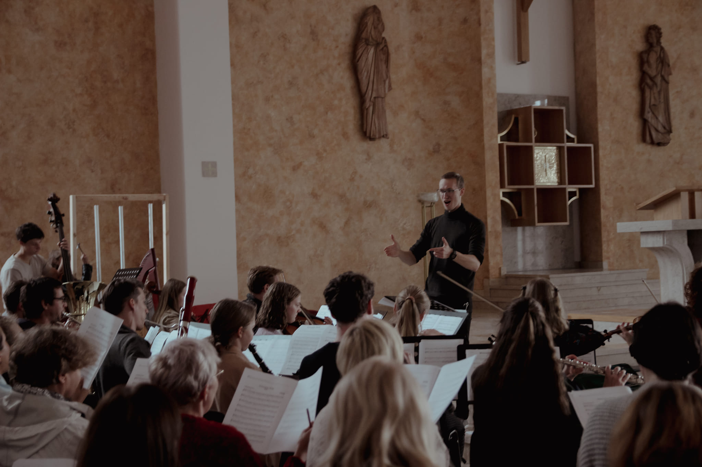

Portfolio
Poznaj moje realizacje w różnych kategoriach muzycznych

Kompozycje & Aranżacje
Oryginalne utwory muzyczne oraz aranżacje dla różnych składów instrumentalnych i wokalnych. Od muzyki liturgicznej po koncertową.
Posłuchaj

Projekty Chóralne & Orkiestrowe
Wielkoformatowe projekty muzyczne - oratoria, msze, koncerty chóralno-orkiestrowe. Pełna koordynacja i kierownictwo artystyczne.
Zobacz realizacje
Oprawa Muzyczna Uroczystości
Profesjonalna oprawa muzyczna ślubów, pogrzebów, chrztów i innych uroczystości kościelnych. Indywidualne podejście do każdego wydarzenia.
Zobacz i posłuchaj